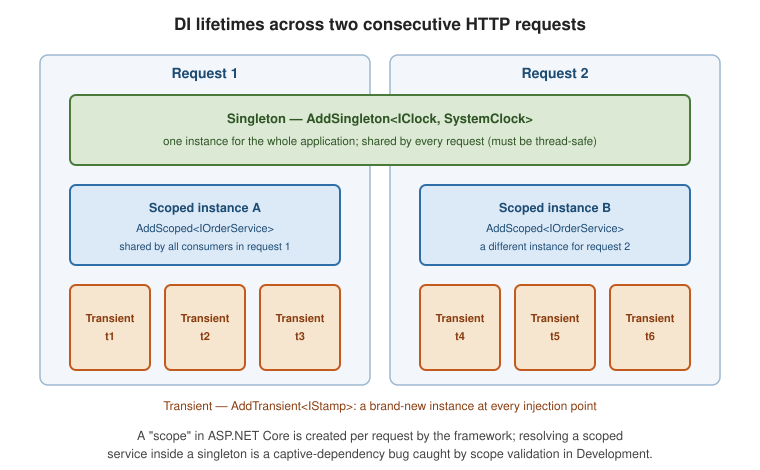

Dependency Injection
|
This content was generated with the assistance of AI and should be verified against the official documentation before being relied on in production. |
ASP.NET Core is built on dependency injection: the framework, and your code, declare the services they need as constructor parameters and the container supplies them.
The container
builder.Services is an IServiceCollection — a list of service descriptors (service type, implementation,
lifetime). builder.Build() compiles it into an IServiceProvider that resolves instances.
builder.Services.AddScoped<IOrderService, OrderService>();
builder.Services.AddHttpClient<IPaymentGateway, StripeGateway>();
builder.Services.AddSingleton(TimeProvider.System);Lifetimes
| Lifetime | One instance per… |
|---|---|
|
Application. Created once, shared by every request. Must be thread-safe. |
|
Scope — in ASP.NET Core, one HTTP request. The typical choice for services that touch a
|
|
Resolution. A new instance every time it is injected. |
Captive dependency: if a singleton takes a scoped (or transient) service in its constructor, that short-lived service is trapped for the whole application lifetime. In Development the container validates scopes at build time and throws when this happens.
// WRONG: singleton capturing a scoped DbContext
builder.Services.AddSingleton<CacheWarmer>(); // ctor: CacheWarmer(AppDbContext db)
// RIGHT: take IServiceScopeFactory and open a scope per unit of work
public sealed class CacheWarmer(IServiceScopeFactory scopeFactory)
{
public async Task WarmAsync()
{
using var scope = scopeFactory.CreateScope();
var db = scope.ServiceProvider.GetRequiredService<AppDbContext>();
// ...
}
}Registration techniques
services.AddScoped<IClock, SystemClock>(); // implementation type
services.AddSingleton<IClock>(new SystemClock()); // instance
services.AddScoped<IClock>(sp => new SystemClock(sp.GetRequiredService<TimeProvider>())); // factory
services.TryAddScoped<IClock, SystemClock>(); // no-op if already registered
services.TryAddEnumerable(ServiceDescriptor.Singleton<IStartupFilter, MyFilter>()); // add once to a set
// keyed services -- pick an implementation by key
services.AddKeyedScoped<INotifier, EmailNotifier>("email");
services.AddKeyedScoped<INotifier, SmsNotifier>("sms");public sealed class SignupHandler([FromKeyedServices("email")] INotifier notifier);See .NET dependency injection and keyed services.
Consuming services
-
Controllers, Razor Pages, SignalR hubs,
IMiddleware— constructor injection. -
Minimal API handlers — add the service as a parameter; the framework infers it from the container.
[FromKeyedServices("...")]selects a keyed one.app.MapPost("/orders", async (CreateOrder cmd, IOrderService orders) => await orders.CreateAsync(cmd)); -
Razor / Blazor components —
@inject IOrderService Orders(or[Inject]on a property).@inject IClock Clock <p>Server time: @Clock.UtcNow</p> -
Singletons / background services — inject
IServiceScopeFactoryand open a scope per unit of work.
Replacing the container
Third-party containers plug in via UseServiceProviderFactory. Autofac, for example, adds assembly scanning
and richer registration:
builder.Host.UseServiceProviderFactory(new AutofacServiceProviderFactory());
builder.Host.ConfigureContainer<ContainerBuilder>(b =>
b.RegisterAssemblyTypes(typeof(Program).Assembly)
.Where(t => t.Name.EndsWith("Repository"))
.AsImplementedInterfaces());The built-in container is deliberately minimal; reach for a replacement only when you need features it lacks. See DI guidelines.
Lifetimes across two requests

A singleton is the same instance in both requests; a scoped service is one instance per request (shared by every consumer within that request); a transient service is a fresh instance at every injection point.
Deep dive: resolving the Orders object graph
The container resolves a graph, not a single object. When POST /orders arrives, the framework creates a request
scope, asks it for the endpoint’s parameters, and each constructor parameter is resolved recursively. The lifetime of
each node decides whether the instance comes from the root provider (singleton), the request scope (scoped), or is
created fresh (transient).
Everything resolved from the request scope that implements IDisposable or IAsyncDisposable is disposed when the
scope ends — which is why the DbContext is released at the end of the request without any code of yours. Instances
that you pass in pre-built (AddSingleton<IClock>(new SystemClock())) are not disposed by the container, because
it did not create them; instances created by a factory lambda are.
Fail fast: scope and build validation
In Development the host turns on ValidateScopes and ValidateOnBuild for you. Outside Development, or for a plain
ServiceCollection (for example in a test), enable them explicitly so that a captive dependency or a missing
registration is a startup failure rather than a 3 a.m. surprise:
builder.Host.UseDefaultServiceProvider((context, options) =>
{
options.ValidateScopes = true; // singleton -> scoped is an error
options.ValidateOnBuild = true; // every constructor parameter must be resolvable
});ValidateOnBuild cannot see services resolved through IServiceProvider.GetService inside a factory lambda, so it
complements, but does not replace, an integration test that boots the app.
Decorating a service
The built-in container has no Decorate method, but a factory registration achieves the same result. Here an
IOrderService gains caching without the endpoint knowing:
public interface IOrderService
{
Task<OrderDto?> GetAsync(int id, CancellationToken ct);
}
public sealed class OrderService(AppDbContext db) : IOrderService
{
public async Task<OrderDto?> GetAsync(int id, CancellationToken ct) =>
await db.Orders.Where(o => o.Id == id)
.Select(o => new OrderDto(o.Id, o.Total))
.SingleOrDefaultAsync(ct);
}
public sealed class CachedOrderService(IOrderService inner, IMemoryCache cache) : IOrderService
{
public Task<OrderDto?> GetAsync(int id, CancellationToken ct) =>
cache.GetOrCreateAsync($"order:{id}", _ => inner.GetAsync(id, ct));
}
public sealed record OrderDto(int Id, decimal Total);
// registration: build the inner service, wrap it
builder.Services.AddMemoryCache();
builder.Services.AddScoped<OrderService>();
builder.Services.AddScoped<IOrderService>(sp =>
new CachedOrderService(sp.GetRequiredService<OrderService>(), sp.GetRequiredService<IMemoryCache>()));The concrete OrderService is registered as itself, and the interface is mapped to the decorator; callers that ask
for IOrderService receive the cached wrapper. The packages Scrutor and Autofac offer a one-line Decorate, but
the factory form needs no dependency.
Open generics and multiple implementations
An open-generic registration serves every closed type; registering several implementations of one interface and
injecting IEnumerable<T> gives you all of them in registration order (the last registration wins for a plain T):
builder.Services.AddScoped(typeof(IRepository<>), typeof(EfRepository<>)); // IRepository<Order>, IRepository<Product>, ...
builder.Services.AddScoped<IOrderRule, MinimumTotalRule>();
builder.Services.AddScoped<IOrderRule, StockAvailableRule>();
public sealed class OrderValidator(IEnumerable<IOrderRule> rules)
{
public IEnumerable<string> Validate(Order order) =>
rules.SelectMany(r => r.Check(order));
}Testing with the container
Because lifetimes are a runtime property, a test can assert the graph without a web server:
var services = new ServiceCollection()
.AddScoped<IOrderService, OrderService>()
.AddDbContext<AppDbContext>(o => o.UseInMemoryDatabase("t"))
.BuildServiceProvider(new ServiceProviderOptions { ValidateScopes = true, ValidateOnBuild = true });
using var scope = services.CreateScope();
Assert.NotNull(scope.ServiceProvider.GetRequiredService<IOrderService>());See also Testing ASP.NET Core Applications for WebApplicationFactory, which lets
a test replace registrations with fakes.